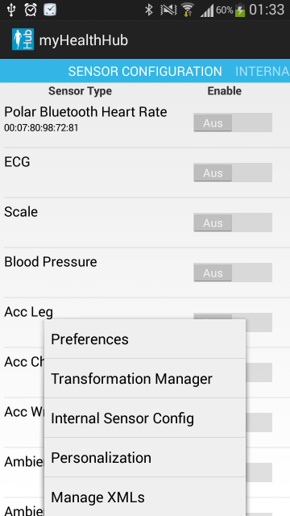
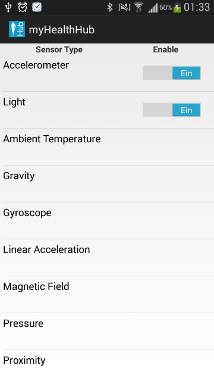
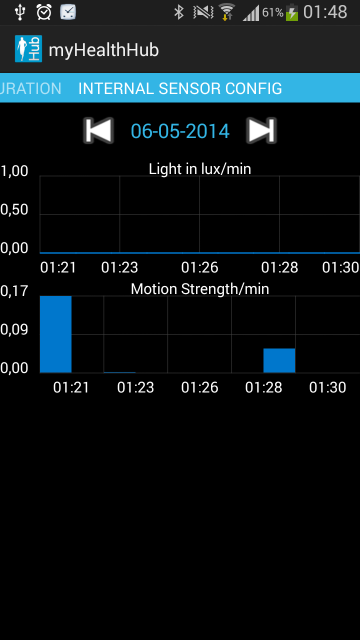
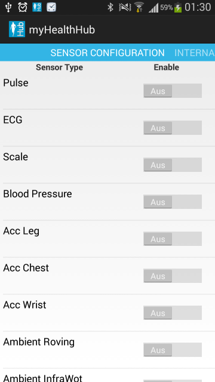
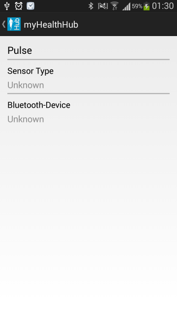
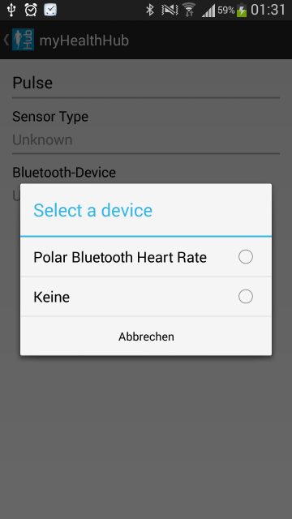
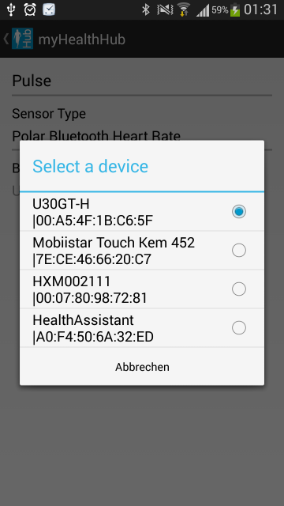
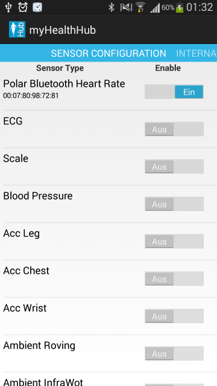

Demo: Use tue internal phone sensors
myHealthHub can also be used to record data of sensors. Related information about these sensors can be found on the Android developer page.To start open myHealthHub:
- Tap on the menu button of the device and choose "Interal Sensor Config"

- Here you can change the sensors that are being logged by the app. Simply deactivate one of the activated sensors and choose another sensor. By default, each minute the variance of the accelerometer and the mean of the light reading are stored in the internal database.

- If a sensor is activated, its raw data can be recorded and be viewed on the second tap of the app in "Traffic Monitor" as a simple plot demonstration (thanks to GraphView from jjoe64)

Use with Bluetooth Sensor
You can use the myHealthHub with other, external sensors via the Bluetooth connection. Here, we describe the use of the app with a Polar Heart Rate Monitor.- Wet your Polar Heart Rate Monitor to increase conductivity and put it on
- Go to Android Settings - Tap "Wireless & Network"
- Open "Bluetooth Settings"
- Tap "Scan Devices"
- Your Heart Rate Monitor should appear below “Bluetooth devices”. Tap to pair and enter in PIN 0000 (or 1234, depends on the default settings of the device)
- To delete a pairing, open "Settings" next to paired devices, and choose to unpair
- Tap on the "Sensor Configuration" screen on "Pulse" to open its settings menu

- Tap on "Sensor Type" to choose your previously connected device for raw data decoding (here: Polar Bluetooth Heart Rate)

- Tap "Bluetooth Device" to choose the Mac Address of pairing sensor.

- Go back to the main menu. Now you can enable or disable the Polar Sensor, which will allow myHealthHub to advertise/unadvertise Heart Rate data so that other applications can subscribe to it.

Have fun coding!